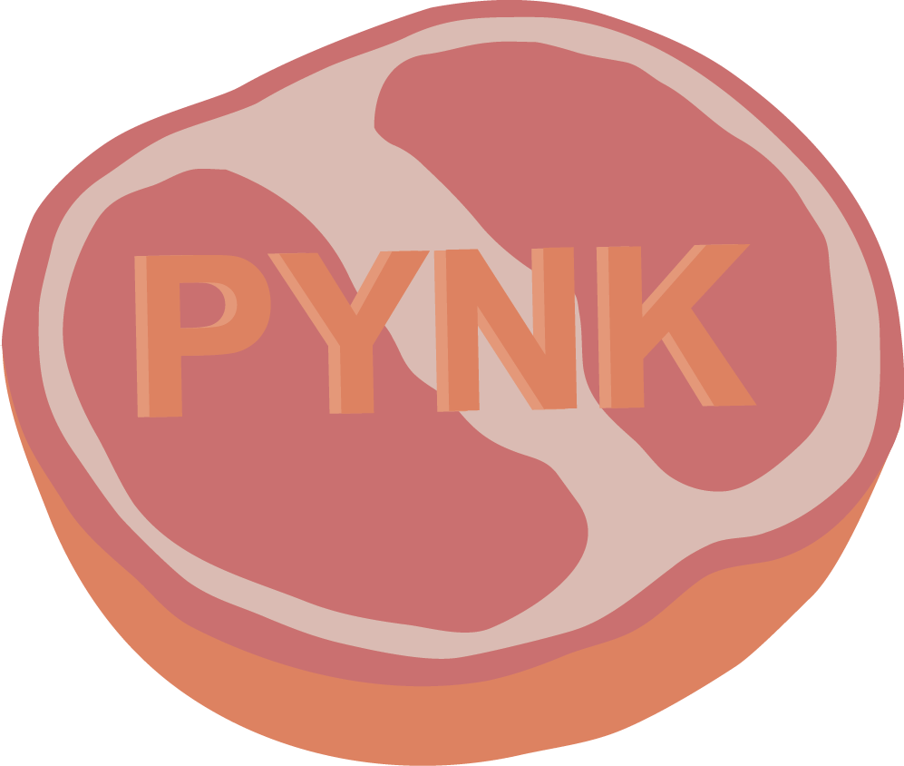

Dates
June 2017 - December 2018

A girl looking off to the side, created in Adobe Illustrator

A girl laughing, created in Adobe Illustrator
A coffee plant growing from a mug, created in Adobe Illustrator, available on Redbubble
Two figures laying on a rock edge, created in Adobe Illustrator.
A girl with a contemplative look driking a milkshake, created in Adobe Illustrator
A recreation of Kehlani's "While We Wait" cover art, created in Adobe Illustrator
Grapefruit imagery from Janelle Monae's "Pynk" music video, created in Adobe Illustrator, available on Redbubble
An illustration of a broken wine bottle inspired by Hozier's "Cherry Wine", created in Adobe Illustrator, available on Redbubble